항구의 아침
밝은 항구 풍경과 여백을 이용한 구성.
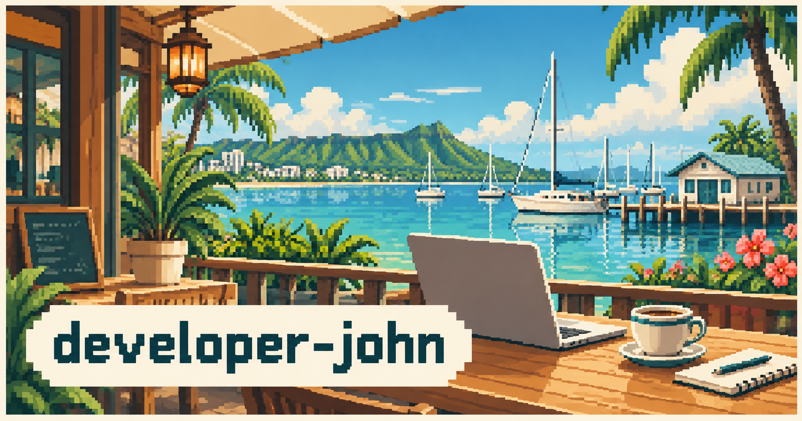
JOHN’S SPACE / SOCIAL IMAGE STUDIES 02
항구 풍경부터 종이 공예·인쇄물·레트로·추상 그래픽까지 비교합니다.
작은 미리보기로 먼저 살펴보고, 이미지를 눌러 전체 그림을 확인하세요. 확대 화면에서 이전·다음 버튼이나 좌우 방향키로 시안을 바꿀 수 있습니다.
밝은 항구 풍경과 여백을 이용한 구성.

창밖 풍경과 작업 공간을 함께 보여주는 구성.
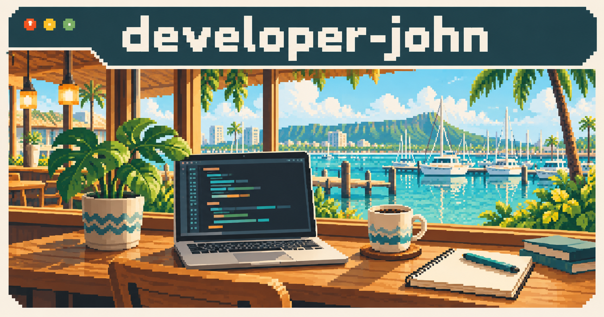
겹친 브라우저 창으로 구분하는 정보와 그림.
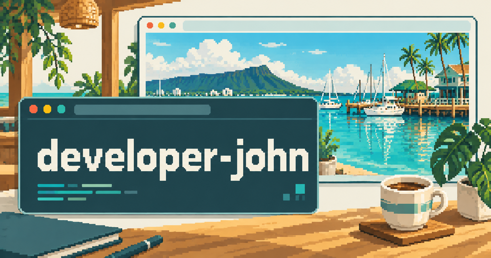
디렉터리 구조와 책상 모티프를 결합한 구성.
이름을 크게 보여주는 타이포 중심의 구성.
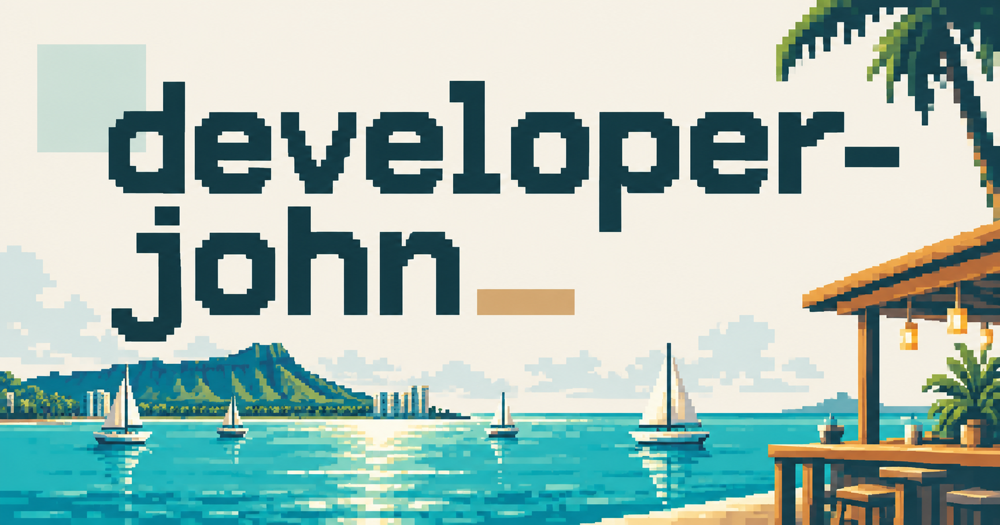
항구 그림과 글자 영역을 나눈 엽서형 배치.
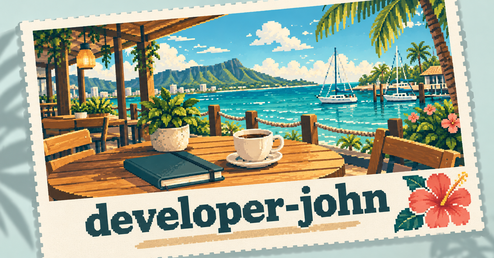
노트와 메모 모티프로 정리한 제목과 여백.
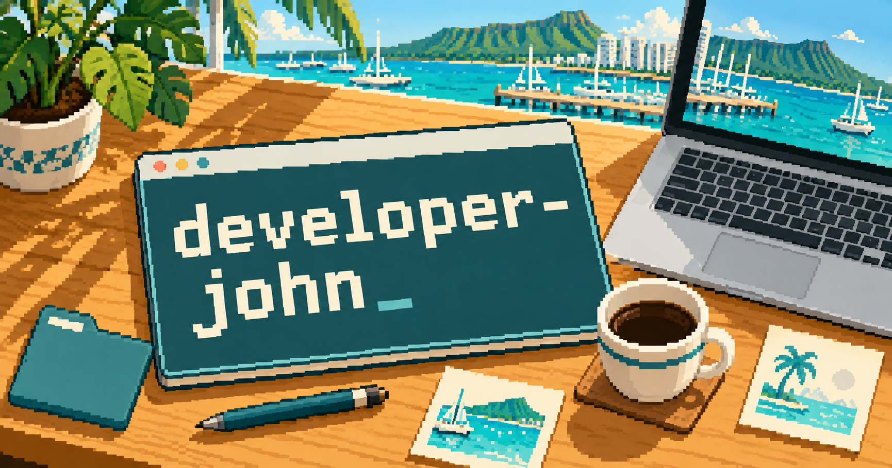
작은 픽셀 풍경을 중심으로 둔 넓은 여백.
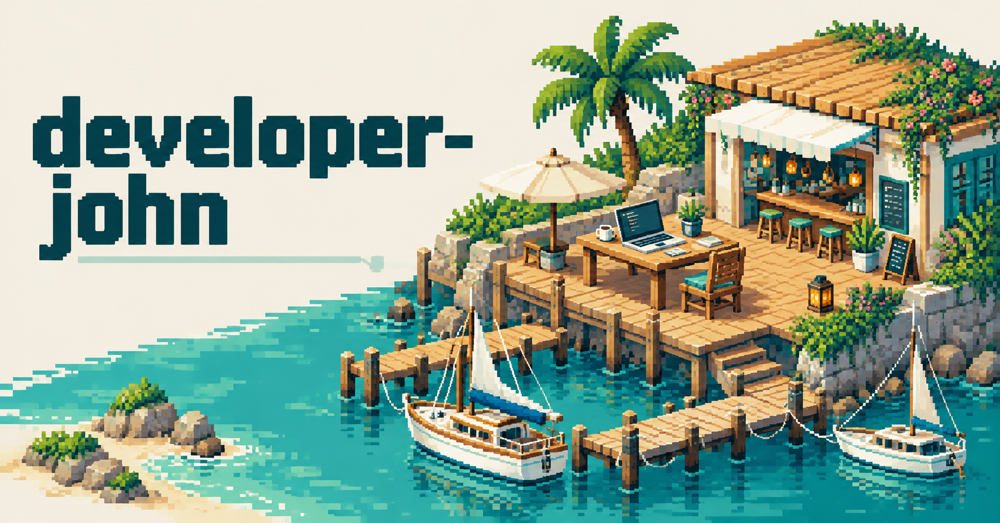
청록색 콘솔 창을 활용한 글자 중심의 구성.
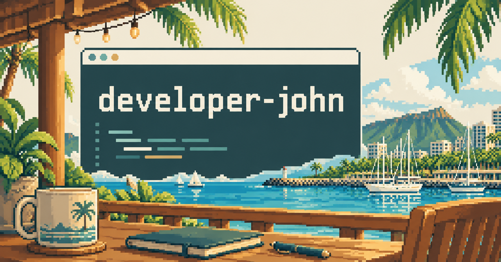
카페 창문으로 프레임을 만든 항구 풍경.
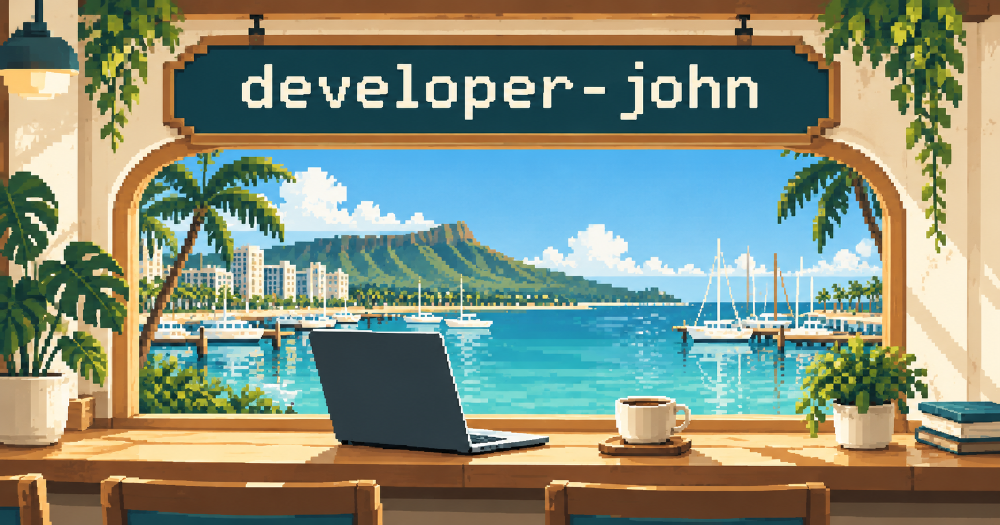
여백과 큰 글자를 중심으로 한 편집 디자인.
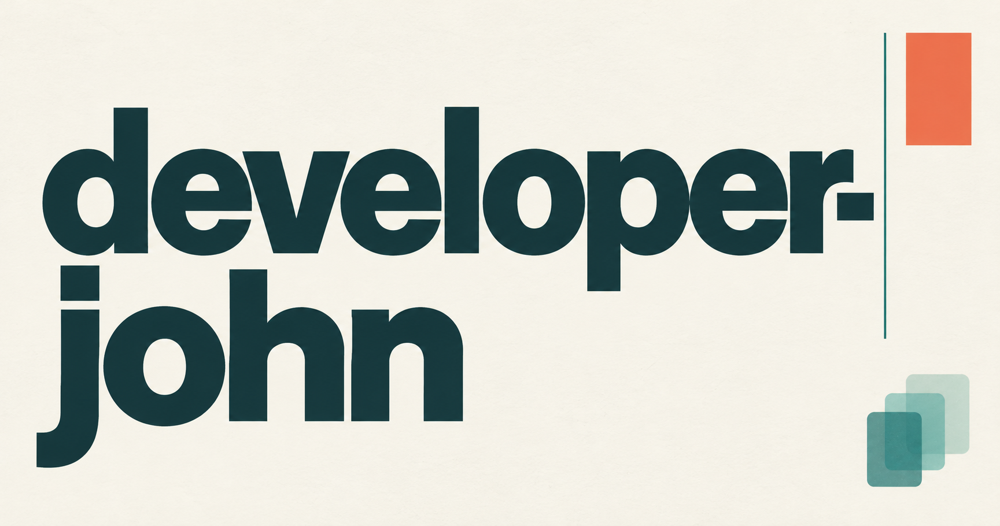
종이를 겹친 듯한 입체적인 바다와 항구.
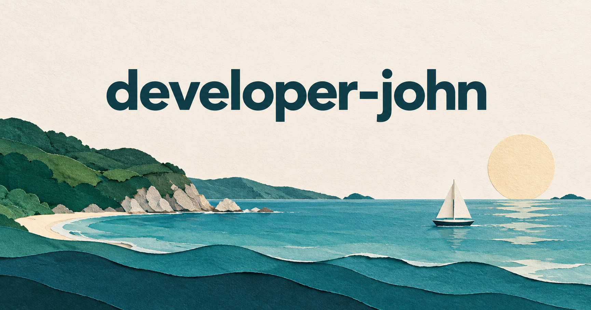
청록·산호색 잉크의 인쇄 포스터.
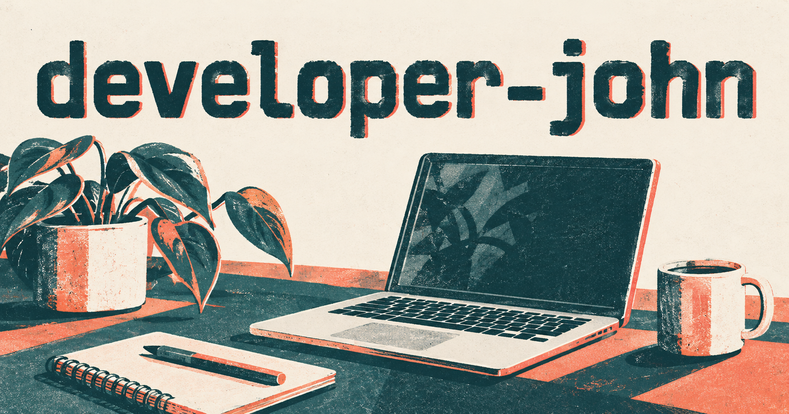
잉크 드로잉으로 표현한 조용한 카페.
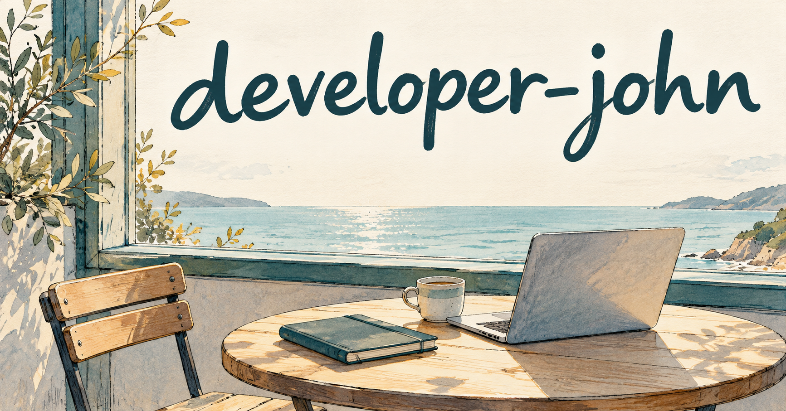
90년대 데스크톱과 폴더를 활용한 화면.
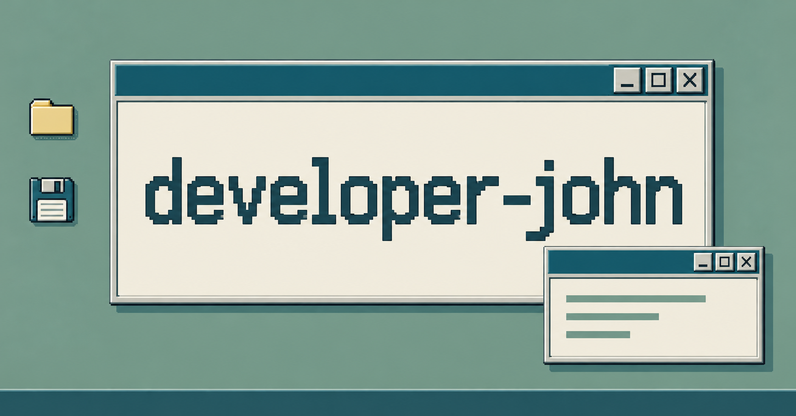
책 표지처럼 단정하게 구성한 개인 작업 공간.
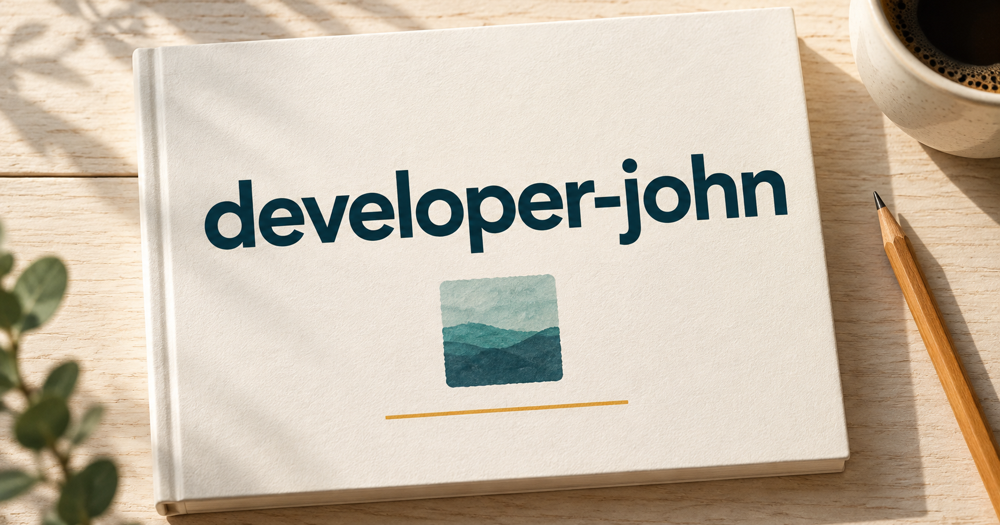
짙은 청록색 설계도와 가는 선의 조합.
밝은 유리 패널과 부드러운 컬러 면.
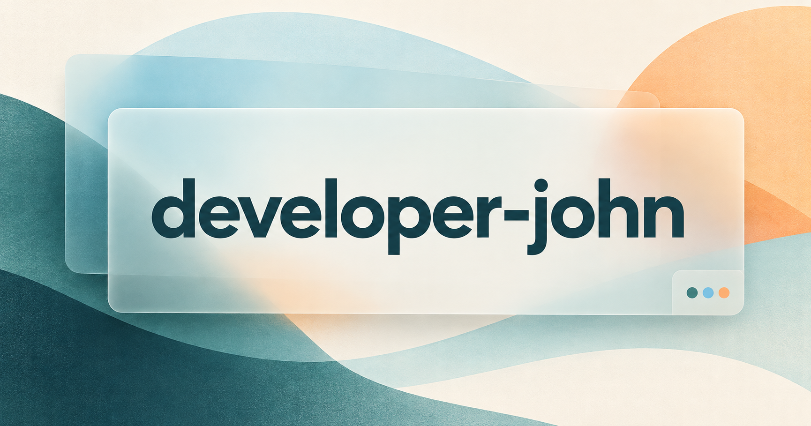
기하학적 타일로 표현한 작은 아이디어.
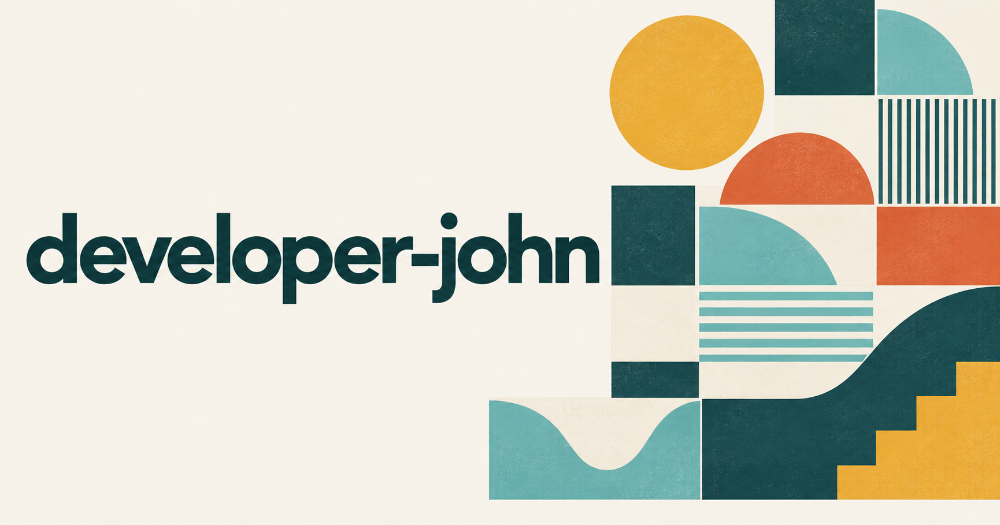
아날로그 필름 느낌의 조용한 항구 카페.